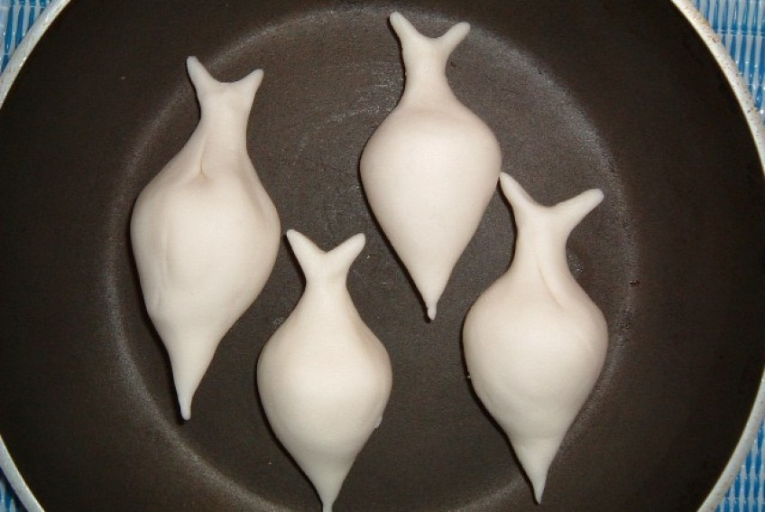

Yomari Recipe

Ingredients
- 2 cups Rice Flour
- 1/3 cup All Purpose Flour
- 2 cups Molasses sugar/Jaggery Balls
- 1 tbsp Dry Coconut (Shredded)
- 1 tbsp Brown Sesame Seed
- 2 tbsp Ghee
- 1/2 cup Milk
- 1/2 cup Water
Steps
Yomari mix
- In a bowl, mix rice flour and all purpose flour.
- Add warm water little at a time and start kneading.
- Once the dough is ready, keep it aside for about 10 minutes.
Chaku
- In a high temperature, heat up a deep cooking pot.
- Put the jaggery balls and start stiring.
- Once all melted, add 2 spoons of ghee and stir it again.
- Then, add little milk and stir again for a minute.
- Take it out in bowl, add grated dry coconut and brown sesame seeds.
Yomari cover
- Take a little bit of oil in one hand and take a small portion of the dough.
- Make a round and then make a cone shape.
- Dip your finger in oil and make a hole on the top of the dough.
- Press down to make a bigger hole.
- Rotate the cover while you make the hole.
- Fill the cover with the chaku . (If the chaku gets too thick, microwave for 20 seconds then pour it)
- Fill it up to halfway and close the top.
- Cook the Yomari in the steamer for about 15 minutes.